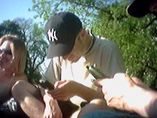

The leaflet that droped through the letter box said "Extreme Day -- Displays by 'Team Extrme' on the 2.5 metre high midi ramp for rollerbladers, skateboarders and BMX Bikes. Basketball displays, Laser Clay Shooting, 30ft Clibing Wall, Snowboard & Surboard Simulators."
We thought this sounded like it could be fun, and so invited the New Sci guys over for a day in Ealing. It was a beautiful summers day and we headed off down to Pitshanger Park to join in the festivities. Our first impressions were that it was busier than we'd expected (it was cup final day, so we expected most people to be indoors watching Liverpool beat Arsenal 2-1)... and there were lots of children around. We'd all been quite keen to try the climbing wall but decided against it when we realised that the queue was made up entirely of children, and we'd feel a bit conspicuous. We spent a lot of time watching the guys near the midi ramp, and saw some little kids who were pretty good. The only event we participated in was the Laser Clay Shooting (there were at least a couple of other adults in the queue for this).
So here are the photos of Cathy, Jono, Ash, Emma, Neela, Steve, Jane and Richard:
|
|
We headed from the Extreme Day back to the flat, picked up some bottles of wine and then headed to another one of Ealing's parks to sit and enjoy the sunshine.
|  | |
Back to index page